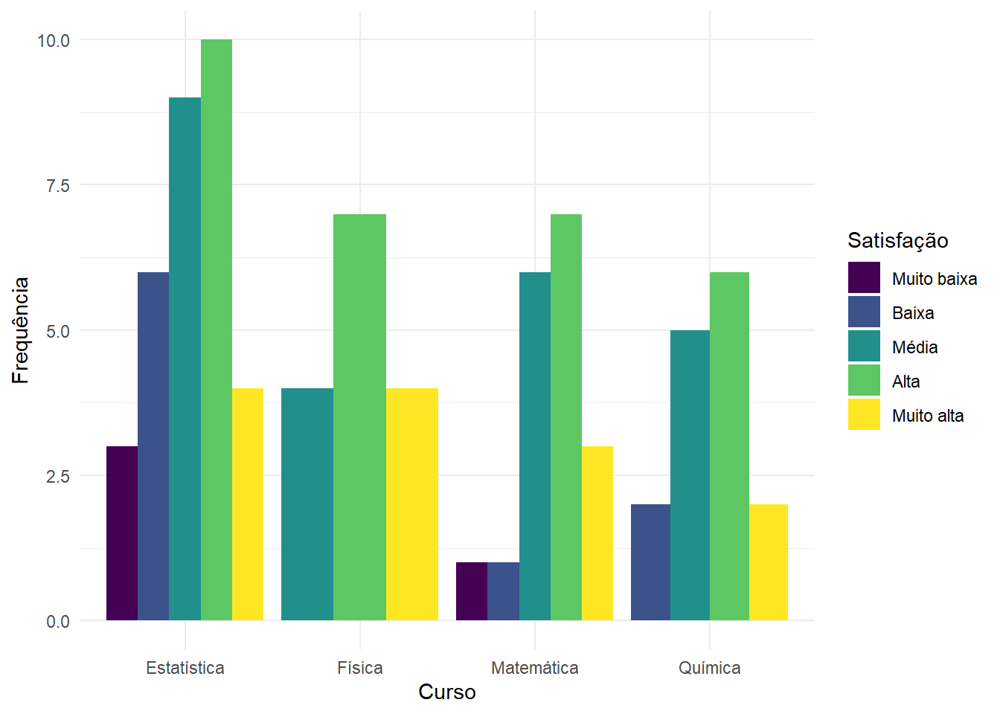
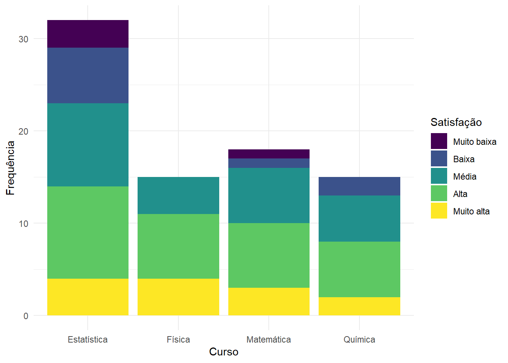
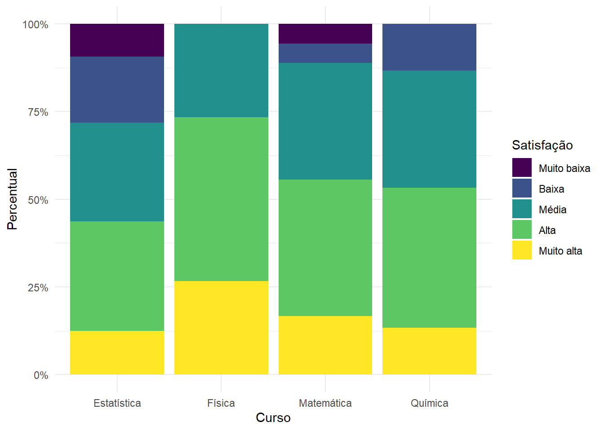
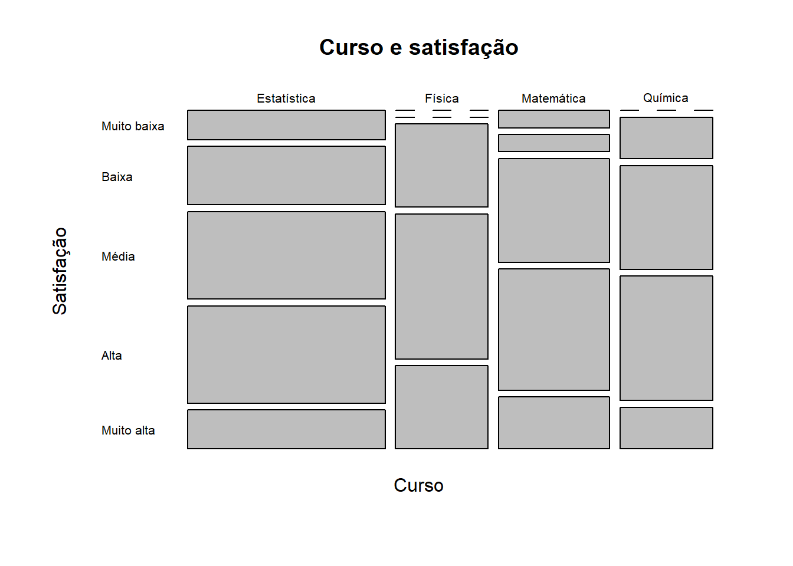

Código
library(tidyverse)
dados <- read_csv(
"dados/estudantes80n.csv",
show_col_types = FALSE
)Até aqui, a maior parte da análise foi univariada: estudamos uma variável de cada vez, descrevendo sua distribuição por meio de tabelas, gráficos e medidas de resumo.
A partir deste capítulo, iniciaremos a análise bivariada, isto é, o estudo simultâneo de duas variáveis observadas nas mesmas unidades estatísticas.
Quando as duas variáveis são qualitativas, nosso interesse deixa de ser apenas saber quantos indivíduos pertencem a cada categoria. Passamos a perguntar, por exemplo:
Essas perguntas serão investigadas por meio de tabelas de contingência, frequências conjuntas, distribuições marginais e condicionais, percentuais por linha e por coluna, representações gráficas e medidas descritivas de associação.
Ao final deste capítulo, espera-se que o estudante seja capaz de:
Na análise univariada, cada variável é estudada separadamente. Podemos, por exemplo, construir uma tabela de frequências para curso e outra para satisfacao.
Essas duas tabelas informam quantos estudantes pertencem a cada curso e quantos apresentam cada nível de satisfação, mas não mostram como curso e satisfação aparecem conjuntamente em cada estudante.
A análise bivariada acrescenta justamente essa informação.
Sejam duas variáveis, \(X\) e \(Y\). Para cada unidade estatística \(i\), observamos o par
\[ (x_i,y_i). \]
Assim, os dados bivariados podem ser representados por
\[ (x_1,y_1),\;(x_2,y_2),\;\ldots,\;(x_n,y_n). \]
O ponto fundamental é que os dois valores de cada par pertencem à mesma unidade observacional.
Considere cinco estudantes para os quais foram registrados o turno e a avaliação da disciplina.
| Estudante | Turno | Avaliação |
|---|---|---|
| 1 | Manhã | Alta |
| 2 | Noite | Baixa |
| 3 | Manhã | Média |
| 4 | Manhã | Alta |
| 5 | Noite | Média |
Para o primeiro estudante, o par observado é
\[ (\text{Manhã},\text{Alta}). \]
Para o segundo,
\[ (\text{Noite},\text{Baixa}). \]
A análise bivariada preserva esses pares e procura identificar padrões na ocorrência conjunta das duas características.
Em uma análise bivariada, não basta possuir duas listas de valores. É necessário saber quais valores pertencem à mesma unidade estatística.
Trocar aleatoriamente a ordem de uma das variáveis preservaria suas distribuições univariadas, mas destruiria a relação existente entre elas.
Quando \(X\) e \(Y\) são variáveis qualitativas, podemos contar quantas unidades apresentam simultaneamente cada combinação de categorias.
Considere:
Suponha que 40 estudantes tenham produzido a seguinte distribuição:
| Turno | Baixa | Média | Alta | Total |
|---|---|---|---|---|
| Manhã | 4 | 6 | 10 | 20 |
| Noite | 8 | 7 | 5 | 20 |
| Total | 12 | 13 | 15 | 40 |
A parte interna da Tabela 9.2 contém as frequências conjuntas.
Por exemplo,
\[ f_{\text{Manhã, Alta}}=10 \]
significa que 10 estudantes pertencem simultaneamente ao turno da manhã e à categoria de avaliação alta.
Da mesma forma,
\[ f_{\text{Noite, Baixa}}=8 \]
indica que 8 estudantes são do turno da noite e apresentam avaliação baixa.
Uma tabela que organiza simultaneamente as categorias de duas variáveis qualitativas é chamada de tabela de contingência ou tabela de dupla entrada.
Suponha que \(X\) possua \(r\) categorias,
\[ x_1,x_2,\ldots,x_r, \]
e que \(Y\) possua \(c\) categorias,
\[ y_1,y_2,\ldots,y_c. \]
Representamos por
\[ f_{ij} \]
a frequência conjunta correspondente à categoria \(x_i\) de \(X\) e à categoria \(y_j\) de \(Y\).
A soma de todas as frequências conjuntas é igual ao número total de unidades:
\[ \sum_{i=1}^{r}\sum_{j=1}^{c}f_{ij}=n. \]
Também podemos expressar cada célula em relação ao total de observações.
A frequência relativa conjunta é
\[ f_{r_{ij}} = \frac{f_{ij}}{n}. \]
Em porcentagem,
\[ 100\times\frac{f_{ij}}{n}. \]
No exemplo anterior,
\[ \frac{10}{40}=0{,}25. \]
Portanto, 25% de todos os estudantes pertencem simultaneamente ao turno da manhã e à categoria de avaliação alta.
A distribuição conjunta em porcentagens é:
| Turno | Baixa | Média | Alta | Total |
|---|---|---|---|---|
| Manhã | 10,0% | 15,0% | 25,0% | 50,0% |
| Noite | 20,0% | 17,5% | 12,5% | 50,0% |
| Total | 30,0% | 32,5% | 37,5% | 100,0% |
Observe que, nessa tabela, todas as células foram divididas pelo mesmo denominador:
\[ n=40. \]
Por isso, a soma das células internas é 100%.
Os totais das linhas e das colunas são chamados de frequências marginais.
Na Tabela 9.2, temos
\[ f_{\text{Manhã},\cdot}=20 \]
e
\[ f_{\text{Noite},\cdot}=20. \]
Esses valores descrevem a distribuição do turno sem considerar a avaliação.
Da mesma forma,
\[ f_{\cdot,\text{Baixa}}=12, \]
\[ f_{\cdot,\text{Média}}=13 \]
e
\[ f_{\cdot,\text{Alta}}=15 \]
descrevem a distribuição da avaliação sem considerar o turno.
Em notação geral,
\[ f_{i\cdot}=\sum_{j=1}^{c}f_{ij} \]
e
\[ f_{\cdot j}=\sum_{i=1}^{r}f_{ij}. \]
O ponto na notação indica que estamos somando sobre todas as categorias da outra variável.
A frequência conjunta envolve duas categorias ao mesmo tempo:
turno da manhã e avaliação alta.
A frequência marginal descreve apenas uma variável:
turno da manhã, independentemente da avaliação;
ou
avaliação alta, independentemente do turno.
As distribuições marginais descrevem cada variável separadamente. Para investigar associação, entretanto, geralmente precisamos responder perguntas do tipo:
Como a avaliação se distribui entre os estudantes do turno da manhã?
A expressão “entre os estudantes do turno da manhã” estabelece uma condição. O denominador deixa de ser o total de 40 estudantes e passa a ser o total da categoria Manhã:
\[ 20. \]
Assim, entre os estudantes da manhã,
\[ \frac{4}{20}=20\% \]
apresentam avaliação baixa,
\[ \frac{6}{20}=30\% \]
apresentam avaliação média e
\[ \frac{10}{20}=50\% \]
apresentam avaliação alta.
Temos, portanto, a distribuição da avaliação condicionada ao turno da manhã.
Quando a variável que estabelece a condição está nas linhas, calculamos percentuais por linha.
| Turno | Baixa | Média | Alta | Total |
|---|---|---|---|---|
| Manhã | 20% | 30% | 50% | 100% |
| Noite | 40% | 35% | 25% | 100% |
Cada linha da Tabela 9.4 soma 100%.
Esses percentuais permitem responder à pergunta:
Como a avaliação se distribui dentro de cada turno?
A comparação é imediata: a categoria Alta corresponde a 50% dos estudantes da manhã e a 25% dos estudantes da noite.
Podemos inverter o condicionamento.
Suponha que a pergunta seja:
Entre os estudantes com avaliação alta, como eles se distribuem entre os turnos?
Agora o denominador é o total da coluna Alta:
\[ 15. \]
Logo,
\[ \frac{10}{15}\times100 \approx 66{,}7\% \]
são do turno da manhã e
\[ \frac{5}{15}\times100 \approx 33{,}3\% \]
são do turno da noite.
A tabela completa de percentuais por coluna é:
| Turno | Baixa | Média | Alta |
|---|---|---|---|
| Manhã | 33,3% | 46,2% | 66,7% |
| Noite | 66,7% | 53,8% | 33,3% |
| Total | 100% | 100% | 100% |
A mesma frequência conjunta pode produzir porcentagens diferentes, todas corretas, dependendo da pergunta.
Considere novamente os 10 estudantes do turno da manhã com avaliação alta.
Em relação ao total de estudantes,
\[ \frac{10}{40}=25\%. \]
Entre os estudantes do turno da manhã,
\[ \frac{10}{20}=50\%. \]
Entre os estudantes com avaliação alta,
\[ \frac{10}{15}\approx66{,}7\%. \]
Os três resultados utilizam a mesma célula, mas respondem a perguntas diferentes.
Pergunte sempre:
Entre quem estou calculando a porcentagem?
A escolha do denominador é determinada pela pergunta estatística, e não por uma regra mecânica.
Duas variáveis qualitativas apresentam associação quando a distribuição de uma delas se modifica de acordo com as categorias da outra.
No exemplo, a distribuição da avaliação é:
| Turno | Baixa | Média | Alta |
|---|---|---|---|
| Manhã | 20% | 30% | 50% |
| Noite | 40% | 35% | 25% |
A proporção de avaliações altas cai de 50% no turno da manhã para 25% no turno da noite. A proporção de avaliações baixas, por sua vez, aumenta de 20% para 40%.
As distribuições condicionais não são iguais. Descritivamente, isso sugere associação entre turno e avaliação.
A ideia central é:
Se conhecer a categoria de uma variável ajuda a descrever como a outra variável se distribui, existe associação entre elas.
A situação oposta é a independência.
Em termos descritivos, duas variáveis seriam independentes se a distribuição de uma delas permanecesse a mesma em todas as categorias da outra.
Imagine, por exemplo:
| Turno | Baixa | Média | Alta |
|---|---|---|---|
| Manhã | 30% | 32,5% | 37,5% |
| Noite | 30% | 32,5% | 37,5% |
Nesse caso, saber o turno do estudante não modifica o perfil da avaliação. A informação sobre o turno não acrescenta informação descritiva sobre a distribuição da avaliação.
Na prática, com dados observados, não esperamos necessariamente percentuais exatamente iguais. Por isso, nesta etapa, procuramos avaliar quão semelhantes ou diferentes são os perfis condicionais.
A existência de associação entre duas variáveis não permite concluir, por si só, que uma delas causa a outra.
Uma associação pode refletir diversos mecanismos, outras variáveis não observadas, diferenças entre grupos ou simplesmente a estrutura dos dados analisados.
Neste capítulo, nosso objetivo é descrever a associação observada, e não estabelecer relações causais.
Também podemos comparar as frequências observadas com as frequências que seriam compatíveis com uma situação de independência, mantendo os mesmos totais marginais.
Para a célula \((i,j)\), essa frequência de referência é
\[ e_{ij} = \frac{f_{i\cdot}f_{\cdot j}}{n}. \]
A lógica pode ser entendida sem recorrer à inferência estatística.
No exemplo, 50% dos estudantes pertencem ao turno da manhã e 37,5% apresentam avaliação alta. Se as duas características não estivessem associadas, seria natural esperar que aproximadamente 37,5% dos 20 estudantes da manhã apresentassem avaliação alta:
\[ 20\times0{,}375=7{,}5. \]
Equivalentemente,
\[ e_{\text{Manhã, Alta}} = \frac{20\times15}{40} = 7{,}5. \]
Entretanto, foram observados 10 estudantes nessa célula.
Para toda a tabela, as frequências de referência sob independência são:
| Turno | Baixa | Média | Alta |
|---|---|---|---|
| Manhã | 6,0 | 6,5 | 7,5 |
| Noite | 6,0 | 6,5 | 7,5 |
Quanto maiores forem, de forma conjunta, as diferenças entre frequências observadas e frequências de referência, maior será a evidência descritiva de associação.
Quando a comparação de interesse envolve dois grupos e uma categoria específica da variável resposta, uma medida particularmente simples é a diferença de proporções.
Considere a categoria Avaliação alta.
No turno da manhã,
\[ p_{\text{Manhã}} = \frac{10}{20} = 0{,}50. \]
No turno da noite,
\[ p_{\text{Noite}} = \frac{5}{20} = 0{,}25. \]
A diferença é
\[ \Delta p = 0{,}50-0{,}25 = 0{,}25. \]
Em porcentagem,
\[ 25\text{ pontos percentuais}. \]
Portanto, a proporção de estudantes com avaliação alta é 25 pontos percentuais maior no turno da manhã do que no turno da noite.
A diferença entre 50% e 25% é de 25 pontos percentuais.
Evite dizer que a diferença é simplesmente “25%”, pois essa expressão pode ser confundida com uma variação relativa.
A diferença de proporções possui duas vantagens: é simples de calcular e preserva a direção da comparação. Entretanto, ela depende da categoria escolhida e da ordem em que os grupos são comparados.
Para uma tabela \(2\times2\), podemos resumir a intensidade da associação pelo coeficiente Phi, representado por \(\phi\).
Considere uma tabela genérica:
| \(Y_1\) | \(Y_2\) | |
|---|---|---|
| \(X_1\) | \(a\) | \(b\) |
| \(X_2\) | \(c\) | \(d\) |
O coeficiente Phi pode ser calculado por
\[ \phi = \frac{ad-bc} {\sqrt{(a+b)(c+d)(a+c)(b+d)}}. \]
No exemplo, vamos reunir Média e Baixa em uma única categoria, “Não alta”:
| Turno | Alta | Não alta | Total |
|---|---|---|---|
| Manhã | 10 | 10 | 20 |
| Noite | 5 | 15 | 20 |
Assim,
\[ \phi = \frac{10(15)-10(5)} {\sqrt{20\cdot20\cdot15\cdot25}} \approx 0{,}258. \]
Em uma tabela \(2\times2\),
\[ -1\leq\phi\leq1. \]
O valor zero corresponde à ausência de associação segundo essa medida, enquanto magnitudes maiores indicam associação mais intensa.
Entretanto, o sinal de \(\phi\) depende da ordem e da codificação das categorias. Para variáveis puramente nominais, essa ordem pode ser arbitrária. Por isso, muitas vezes a interpretação concentra-se em \(|\phi|\) e a direção é descrita por meio das proporções.
Não existe uma regra universal que transforme automaticamente valores de \(\phi\) em “associação fraca”, “moderada” ou “forte”.
A interpretação deve considerar o contexto, os percentuais condicionais, o tamanho da tabela e a relevância substantiva das diferenças observadas.
O coeficiente Phi é especialmente adequado para tabelas \(2\times2\). Para tabelas maiores, uma medida amplamente utilizada é o V de Cramér.
Primeiro, resumimos a discrepância entre as frequências observadas \(f_{ij}\) e as frequências de referência sob independência \(e_{ij}\) por
\[ \chi^2 = \sum_{i=1}^{r} \sum_{j=1}^{c} \frac{(f_{ij}-e_{ij})^2}{e_{ij}}. \]
Neste capítulo, essa quantidade será utilizada apenas como uma medida descritiva de discrepância. Não realizaremos teste de hipóteses nem utilizaremos valores-\(p\).
O V de Cramér é definido por
\[ V = \sqrt{ \frac{\chi^2} {n\min(r-1,c-1)} }. \]
Seu valor varia entre 0 e 1:
\[ 0\leq V\leq1. \]
Para a Tabela 9.2,
\[ \chi^2\approx3{,}077 \]
e
\[ V = \sqrt{\frac{3{,}077}{40\cdot1}} \approx 0{,}277. \]
Esse número resume a associação da tabela completa, utilizando simultaneamente as três categorias de avaliação.
Para uma tabela \(2\times2\),
\[ V=|\phi|. \]
O coeficiente Phi pode conservar um sinal, dependendo da ordenação das categorias. O V de Cramér é sempre não negativo.
Se uma variável for ordinal, como níveis de satisfação, o V de Cramér trata suas categorias apenas como categorias distintas.
Ele não aproveita a informação de que, por exemplo,
\[ \text{Muito baixa}<\text{Baixa}<\text{Média}<\text{Alta}<\text{Muito alta}. \]
Portanto, o V de Cramér é uma medida geral de associação entre variáveis qualitativas, mas não é uma medida específica de associação ordinal.
A tabela de contingência é fundamental, mas gráficos podem tornar os padrões de associação mais fáceis de perceber.
No gráfico de barras agrupadas, as categorias de uma variável são colocadas lado a lado dentro das categorias da outra.
Esse gráfico facilita comparações diretas entre alturas de barras, principalmente quando o número de categorias não é muito grande.
No gráfico de barras empilhadas, as categorias são acumuladas dentro de cada barra.
A altura total pode representar o número de indivíduos de cada grupo, enquanto os segmentos mostram sua composição.
A comparação dos segmentos internos, entretanto, pode ser difícil quando eles não compartilham a mesma linha de base.
No gráfico proporcional, todas as barras possuem a mesma altura, correspondente a 100%.
Assim, o foco deixa de ser o tamanho absoluto dos grupos e passa a ser a comparação das distribuições condicionais.
Esse gráfico é particularmente útil para investigar associação entre duas variáveis qualitativas.
O gráfico mosaico representa cada combinação de categorias por um retângulo cuja área é proporcional à frequência conjunta.
As larguras e alturas dos retângulos refletem as distribuições marginais e condicionais. Por isso, o gráfico mosaico permite visualizar simultaneamente o tamanho dos grupos e sua composição.
A interpretação exige alguma familiaridade, mas ele é especialmente útil quando a tabela possui várias categorias.
| Representação | Principal destaque | Observação |
|---|---|---|
| Barras agrupadas | comparação direta entre categorias | pode ficar carregado com muitas categorias |
| Barras empilhadas | total e composição do grupo | segmentos internos são mais difíceis de comparar |
| Barras proporcionais | comparação das distribuições condicionais | perde a informação visual do tamanho dos grupos |
| Mosaico | frequências conjuntas, marginais e composição | exige maior atenção na leitura |
Uma boa análise não deve limitar-se a reproduzir números da tabela. Uma sequência útil é:
Por exemplo, para a Tabela 9.4, uma interpretação adequada seria:
A distribuição da avaliação difere entre os turnos. Entre os estudantes da manhã, 50% apresentam avaliação alta, enquanto essa proporção é de 25% entre os estudantes da noite. Avaliações baixas correspondem a 20% no turno da manhã e a 40% no turno da noite. Assim, os dados apresentam um padrão descritivo de associação entre turno e avaliação.
Observe que a interpretação compara proporções dentro dos grupos, e não apenas frequências absolutas.
Alguns cuidados são importantes:
Aula 22 — Prática: análise computacional de duas variáveis qualitativas.
Nesta parte prática, utilizaremos novamente o banco com 80 estudantes empregado nos capítulos anteriores. O arquivo contém, entre outras, as variáveis qualitativas curso, meio_transporte e satisfacao.
O objetivo não é apenas aprender comandos, mas desenvolver um fluxo de análise: construir a tabela, escolher o percentual adequado, representar graficamente e escrever uma interpretação.
library(tidyverse)
dados <- read_csv(
"dados/estudantes80n.csv",
show_col_types = FALSE
)Vamos preservar a ordem natural da variável satisfação:
dados <- dados |>
mutate(
satisfacao = factor(
satisfacao,
levels = c(
"Muito baixa",
"Baixa",
"Média",
"Alta",
"Muito alta"
),
ordered = TRUE
)
)Antes da análise:
dados |>
select(
id_estudante,
curso,
meio_transporte,
satisfacao
) |>
slice_head(n = 8)# A tibble: 8 × 4
id_estudante curso meio_transporte satisfacao
<chr> <chr> <chr> <ord>
1 E001 Química Ônibus Alta
2 E002 Física Aplicativo Muito alta
3 E003 Física Carro Alta
4 E004 Física Aplicativo Alta
5 E005 Física Ônibus Alta
6 E006 Física A pé Alta
7 E007 Estatística Carro Alta
8 E008 Matemática Motocicleta Alta Cada linha continua representando um estudante. Esse pareamento é a base da análise bivariada.
Vamos estudar a associação entre curso e satisfacao.
tab_curso_satisfacao <- table(
dados$curso,
dados$satisfacao
)
tab_curso_satisfacao
Muito baixa Baixa Média Alta Muito alta
Estatística 3 6 9 10 4
Física 0 0 4 7 4
Matemática 1 1 6 7 3
Química 0 2 5 6 2Para adicionar as frequências marginais:
addmargins(
tab_curso_satisfacao
)
Muito baixa Baixa Média Alta Muito alta Sum
Estatística 3 6 9 10 4 32
Física 0 0 4 7 4 15
Matemática 1 1 6 7 3 18
Química 0 2 5 6 2 15
Sum 4 9 24 30 13 80No banco dos 80 estudantes, a tabela conjunta é:
| Curso | Muito baixa | Baixa | Média | Alta | Muito alta | Total |
|---|---|---|---|---|---|---|
| Estatística | 3 | 6 | 9 | 10 | 4 | 32 |
| Física | 0 | 0 | 4 | 7 | 4 | 15 |
| Matemática | 1 | 1 | 6 | 7 | 3 | 18 |
| Química | 0 | 2 | 5 | 6 | 2 | 15 |
| Total | 4 | 9 | 24 | 30 | 13 | 80 |
A Tabela 9.10 permite recuperar simultaneamente as frequências conjuntas e marginais.
Para dividir todas as células pelo total geral:
prop.table(
tab_curso_satisfacao
)
Muito baixa Baixa Média Alta Muito alta
Estatística 0.0375 0.0750 0.1125 0.1250 0.0500
Física 0.0000 0.0000 0.0500 0.0875 0.0500
Matemática 0.0125 0.0125 0.0750 0.0875 0.0375
Química 0.0000 0.0250 0.0625 0.0750 0.0250Em porcentagem:
round(
100 * prop.table(
tab_curso_satisfacao
),
1
)
Muito baixa Baixa Média Alta Muito alta
Estatística 3.8 7.5 11.2 12.5 5.0
Física 0.0 0.0 5.0 8.8 5.0
Matemática 1.2 1.2 7.5 8.8 3.8
Química 0.0 2.5 6.2 7.5 2.5A soma de todas as células é 100%.
Essa tabela responde a perguntas como:
Qual percentual de todos os estudantes é de Estatística e apresenta satisfação alta?
Se queremos responder
Como a satisfação se distribui dentro de cada curso?
os cursos formam os grupos de referência. Como estão nas linhas, calculamos:
percentuais_linha <-
100 * prop.table(
tab_curso_satisfacao,
margin = 1
)
round(
percentuais_linha,
1
)
Muito baixa Baixa Média Alta Muito alta
Estatística 9.4 18.8 28.1 31.2 12.5
Física 0.0 0.0 26.7 46.7 26.7
Matemática 5.6 5.6 33.3 38.9 16.7
Química 0.0 13.3 33.3 40.0 13.3Cada linha soma 100%.
Para os dados observados, obtemos aproximadamente:
| Curso | Muito baixa | Baixa | Média | Alta | Muito alta |
|---|---|---|---|---|---|
| Estatística | 9,4% | 18,8% | 28,1% | 31,2% | 12,5% |
| Física | 0,0% | 0,0% | 26,7% | 46,7% | 26,7% |
| Matemática | 5,6% | 5,6% | 33,3% | 38,9% | 16,7% |
| Química | 0,0% | 13,3% | 33,3% | 40,0% | 13,3% |
A Tabela 9.11 mostra que os perfis de satisfação não são idênticos entre os cursos. Por exemplo, as categorias Alta e Muito alta representam conjuntamente 73,4% dos estudantes de Física e 43,7% dos estudantes de Estatística.
Essa diferença sugere associação descritiva, mas deve ser interpretada juntamente com os tamanhos dos grupos e com as demais categorias.
Agora suponha que a pergunta seja:
Dentro de cada nível de satisfação, como os estudantes se distribuem entre os cursos?
Nesse caso, a condição está nas colunas:
percentuais_coluna <-
100 * prop.table(
tab_curso_satisfacao,
margin = 2
)
round(
percentuais_coluna,
1
)
Muito baixa Baixa Média Alta Muito alta
Estatística 75.0 66.7 37.5 33.3 30.8
Física 0.0 0.0 16.7 23.3 30.8
Matemática 25.0 11.1 25.0 23.3 23.1
Química 0.0 22.2 20.8 20.0 15.4Cada coluna soma 100%.
Essa análise responde a uma pergunta diferente da anterior. Não existe um percentual “correto” independentemente do contexto; existe o percentual adequado à pergunta formulada.
dplyrTambém podemos trabalhar em formato longo:
tabela_longa <- dados |>
count(
curso,
satisfacao,
name = "fi"
) |>
group_by(curso) |>
mutate(
percentual_no_curso =
100 * fi / sum(fi)
) |>
ungroup()
tabela_longa# A tibble: 17 × 4
curso satisfacao fi percentual_no_curso
<chr> <ord> <int> <dbl>
1 Estatística Muito baixa 3 9.38
2 Estatística Baixa 6 18.8
3 Estatística Média 9 28.1
4 Estatística Alta 10 31.2
5 Estatística Muito alta 4 12.5
6 Física Média 4 26.7
7 Física Alta 7 46.7
8 Física Muito alta 4 26.7
9 Matemática Muito baixa 1 5.56
10 Matemática Baixa 1 5.56
11 Matemática Média 6 33.3
12 Matemática Alta 7 38.9
13 Matemática Muito alta 3 16.7
14 Química Baixa 2 13.3
15 Química Média 5 33.3
16 Química Alta 6 40
17 Química Muito alta 2 13.3 Esse formato é especialmente conveniente para construir gráficos e realizar transformações adicionais.
dados |>
ggplot(
aes(
x = curso,
fill = satisfacao
)
) +
geom_bar(
position = "dodge"
) +
labs(
x = "Curso",
y = "Frequência",
fill = "Satisfação"
) +
theme_minimal()
A Figura 9.1 facilita a comparação das frequências absolutas das categorias de satisfação. Entretanto, os cursos possuem tamanhos diferentes, o que deve ser lembrado durante a leitura.
dados |>
ggplot(
aes(
x = curso,
fill = satisfacao
)
) +
geom_bar() +
labs(
x = "Curso",
y = "Frequência",
fill = "Satisfação"
) +
theme_minimal()
A Figura 9.2 preserva visualmente o tamanho de cada curso e mostra sua composição.
Para comparar diretamente os perfis condicionais, usamos position = "fill":
dados |>
ggplot(
aes(
x = curso,
fill = satisfacao
)
) +
geom_bar(
position = "fill"
) +
scale_y_continuous(
labels = scales::percent
) +
labs(
x = "Curso",
y = "Percentual",
fill = "Satisfação"
) +
theme_minimal()
Na Figura 9.3, todas as barras possuem altura igual a 100%. Isso remove visualmente a diferença de tamanho entre os cursos e coloca em evidência as distribuições condicionais.
Para investigar associação, esse gráfico costuma ser mais informativo do que comparar apenas frequências absolutas.
O R possui mosaicplot() na instalação básica:
mosaicplot(
tab_curso_satisfacao,
main = "Curso e satisfação",
xlab = "Curso",
ylab = "Satisfação",
las = 1
)
No gráfico mosaico, a área de cada retângulo é proporcional à frequência conjunta da respectiva combinação de categorias.
Para ilustrar uma comparação \(2\times2\), vamos formular uma pergunta específica:
A proporção de satisfação Alta ou Muito alta difere entre estudantes que utilizam ônibus e estudantes que utilizam outros meios de transporte?
Primeiro, criamos duas variáveis binárias:
dados_binarios <- dados |>
mutate(
transporte_binario = factor(
if_else(
meio_transporte == "Ônibus",
"Ônibus",
"Outros"
),
levels = c(
"Ônibus",
"Outros"
)
),
satisfacao_alta = factor(
if_else(
satisfacao %in% c(
"Alta",
"Muito alta"
),
"Alta/Muito alta",
"Demais"
),
levels = c(
"Alta/Muito alta",
"Demais"
)
)
)A tabela \(2\times2\) é:
tab_2x2 <- table(
dados_binarios$transporte_binario,
dados_binarios$satisfacao_alta
)
addmargins(tab_2x2)
Alta/Muito alta Demais Sum
Ônibus 14 16 30
Outros 29 21 50
Sum 43 37 80Os percentuais por linha são:
prop_2x2 <- prop.table(
tab_2x2,
margin = 1
)
round(
100 * prop_2x2,
1
)
Alta/Muito alta Demais
Ônibus 46.7 53.3
Outros 58.0 42.0Nos dados observados, 46,7% dos usuários de ônibus apresentam satisfação Alta ou Muito alta, contra 58,0% dos usuários de outros meios.
A diferença, tomando Ônibus menos Outros, é:
diferenca <-
prop_2x2[
"Ônibus",
"Alta/Muito alta"
] -
prop_2x2[
"Outros",
"Alta/Muito alta"
]
100 * diferenca[1] -11.33333O resultado é aproximadamente
\[ -11{,}3\text{ pontos percentuais}. \]
O sinal negativo indica que, neste banco, a proporção de satisfação Alta ou Muito alta é menor entre usuários de ônibus.
Podemos criar uma função para tabelas \(2\times2\):
phi_2x2 <- function(tab) {
stopifnot(
all(dim(tab) == c(2, 2))
)
a <- tab[1, 1]
b <- tab[1, 2]
c <- tab[2, 1]
d <- tab[2, 2]
(a * d - b * c) /
sqrt(
(a + b) *
(c + d) *
(a + c) *
(b + d)
)
}Aplicando:
phi <- phi_2x2(
tab_2x2
)
phi[1] -0.1100445abs(phi)[1] 0.1100445Para esses dados,
\[ \phi\approx-0{,}110. \]
A magnitude é pequena em relação ao máximo possível de 1, o que está de acordo com a diferença relativamente modesta observada nas proporções.
O sinal depende da ordem adotada para as categorias. A direção é mais claramente comunicada pela diferença de proporções.
Para a tabela curso por satisfacao, podemos construir as frequências de referência diretamente a partir das margens:
n <- sum(
tab_curso_satisfacao
)
frequencias_referencia <-
outer(
rowSums(tab_curso_satisfacao),
colSums(tab_curso_satisfacao)
) / n
round(
frequencias_referencia,
2
) Muito baixa Baixa Média Alta Muito alta
Estatística 1.60 3.60 9.6 12.00 5.20
Física 0.75 1.69 4.5 5.62 2.44
Matemática 0.90 2.02 5.4 6.75 2.92
Química 0.75 1.69 4.5 5.62 2.44Agora podemos calcular a discrepância total:
qui_quadrado_descritivo <- sum(
(
tab_curso_satisfacao -
frequencias_referencia
)^2 /
frequencias_referencia
)
qui_quadrado_descritivo[1] 8.878264Neste capítulo, esse valor não será utilizado para realizar um teste estatístico. Ele serve apenas como etapa para construir uma medida padronizada de associação.
Podemos criar uma função geral:
cramer_v <- function(tab) {
tab <- as.matrix(tab)
n <- sum(tab)
esperado <- outer(
rowSums(tab),
colSums(tab)
) / n
x2 <- sum(
(tab - esperado)^2 /
esperado
)
k <- min(
nrow(tab) - 1,
ncol(tab) - 1
)
sqrt(
x2 / (n * k)
)
}Aplicando à tabela entre curso e satisfação:
v_curso_satisfacao <- cramer_v(
tab_curso_satisfacao
)
v_curso_satisfacao[1] 0.192335Para os 80 estudantes,
\[ V\approx0{,}192. \]
Esse valor indica que a distribuição conjunta se afasta do padrão de independência, mas está distante da associação máxima possível. A interpretação não deve ser feita isoladamente: a Tabela 9.11 e a Figura 9.3 mostram como os perfis diferem.
O V de Cramér resume toda a tabela em um único número.
Essa síntese é útil, mas não informa:
Por isso, a medida deve ser interpretada juntamente com percentuais condicionais e gráficos.
Para duas variáveis qualitativas, um fluxo de trabalho útil é:
Neste capítulo, passamos da análise univariada para a análise simultânea de duas variáveis qualitativas.
Uma observação bivariada é formada por um par de valores registrados na mesma unidade estatística. Quando ambas as variáveis são qualitativas, sua distribuição conjunta pode ser organizada em uma tabela de contingência.
As células internas representam frequências conjuntas, enquanto os totais das linhas e das colunas são as frequências marginais.
As frequências relativas podem ser calculadas em relação:
Percentuais por linha e por coluna respondem a perguntas diferentes. O denominador deve ser escolhido a partir do grupo definido pela pergunta.
A associação entre duas variáveis qualitativas é investigada comparando suas distribuições condicionais. Se essas distribuições forem semelhantes, o comportamento é compatível com independência; se diferirem de forma relevante, os dados apresentam associação descritiva.
A diferença de proporções é útil para comparações simples entre dois grupos. O coeficiente Phi resume a associação em tabelas \(2\times2\), enquanto o V de Cramér pode ser utilizado em tabelas de dimensões maiores.
Gráficos de barras agrupadas, empilhadas e proporcionais, assim como o gráfico mosaico, complementam a leitura da tabela de contingência.
Toda interpretação realizada neste capítulo é descritiva. Não utilizamos testes de hipóteses, valores-\(p\) ou conclusões inferenciais.
Ideia-chave: na análise de duas variáveis qualitativas, associação é percebida quando os perfis percentuais de uma variável mudam de acordo com as categorias da outra.
Explique a diferença entre análise univariada e análise bivariada. Por que preservar o pareamento das observações é indispensável?
Considere a tabela:
| Modalidade | Satisfeito | Não satisfeito | Total |
|---|---|---|---|
| Presencial | 36 | 14 | 50 |
| Remota | 24 | 26 | 50 |
| Total | 60 | 40 | 100 |
Responda:
Qual é a frequência conjunta correspondente a modalidade remota e estudante satisfeito?
Quais são as frequências marginais da variável modalidade?
Qual percentual de todos os estudantes é presencial e satisfeito?
Entre os estudantes presenciais, qual percentual está satisfeito?
Entre os estudantes satisfeitos, qual percentual pertence à modalidade presencial?
Explique por que os percentuais obtidos nos itens c, d e e são diferentes, embora partam da mesma célula.
A partir da tabela do exercício anterior, construa a distribuição percentual por linha e compare os dois perfis. Os dados sugerem associação? Justifique descritivamente.
Considere duas tabelas de percentuais condicionais:
Situação A
| Grupo | Categoria 1 | Categoria 2 | Categoria 3 |
|---|---|---|---|
| G1 | 20% | 50% | 30% |
| G2 | 20% | 50% | 30% |
Situação B
| Grupo | Categoria 1 | Categoria 2 | Categoria 3 |
|---|---|---|---|
| G1 | 10% | 30% | 60% |
| G2 | 40% | 40% | 20% |
Em qual situação há maior evidência descritiva de associação? Explique sem utilizar testes estatísticos.
Em uma comparação entre dois grupos, a proporção de determinada categoria foi de 62% no grupo A e 47% no grupo B.
Calcule a diferença de proporções em pontos percentuais.
Interprete o sinal se a diferença for definida como \(p_A-p_B\).
O resultado seria o mesmo se a ordem dos grupos fosse invertida? Explique.
Considere a tabela \(2\times2\):
| Resposta Sim | Resposta Não | |
|---|---|---|
| Grupo A | 30 | 10 |
| Grupo B | 15 | 25 |
Calcule as proporções de resposta Sim em cada grupo.
Calcule a diferença de proporções.
Calcule o coeficiente Phi.
Interprete conjuntamente a diferença de proporções e \(|\phi|\).
Explique por que o V de Cramér não deve ser interpretado isoladamente, sem examinar a tabela de contingência.
Uma variável possui categorias ordinais. Explique por que o V de Cramér pode ser utilizado, mas não aproveita a informação de ordenação das categorias.
Explique a diferença entre associação e causalidade. Dê um exemplo em que duas variáveis possam estar associadas sem que seja apropriado afirmar que uma causa a outra.
Em uma tabela de contingência, algumas categorias possuem apenas uma ou duas observações. Que cuidados devem ser tomados antes de interpretar percentuais muito elevados ou muito baixos nessas categorias?
Utilize as variáveis curso e meio_transporte do banco dados.
Construa a tabela de contingência.
Acrescente as frequências marginais.
Calcule os percentuais conjuntos.
Calcule os percentuais por curso.
Calcule os percentuais por meio de transporte.
Escreva duas perguntas que sejam respondidas pelos percentuais por linha e duas que sejam respondidas pelos percentuais por coluna.
Para curso e meio_transporte, construa:
um gráfico de barras agrupadas;
um gráfico de barras empilhadas;
um gráfico de barras proporcionais;
um gráfico mosaico.
Compare o que cada representação destaca e indique qual delas você considera mais adequada para comparar os perfis de transporte entre os cursos.
Estude as variáveis meio_transporte e satisfacao.
Construa a tabela de contingência.
Calcule percentuais por meio de transporte.
Construa um gráfico de barras proporcionais.
Descreva os principais padrões observados.
Calcule o V de Cramér e interprete-o juntamente com a tabela e o gráfico.
Considere como “satisfação elevada” as categorias Alta e Muito alta. Compare a proporção de satisfação elevada entre:
estudantes de Estatística e estudantes dos demais cursos;
usuários de ônibus e usuários dos demais meios de transporte.
Para cada comparação, obtenha a diferença em pontos percentuais e o coeficiente Phi.
Crie uma função em R que receba uma tabela de contingência e retorne:
Teste a função com curso e satisfacao.
Escolha duas variáveis qualitativas do banco e produza uma pequena análise bivariada contendo:
Não utilize linguagem causal.